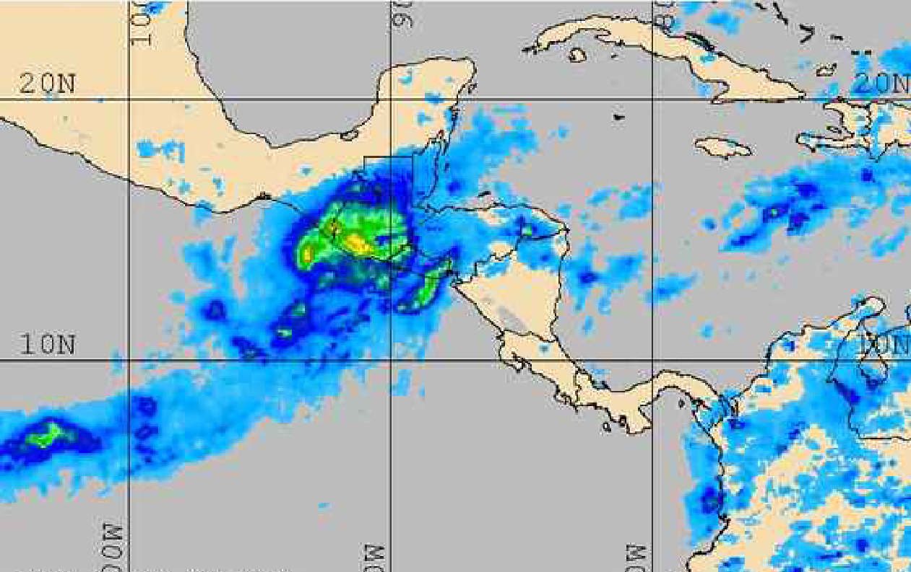

Weather forecasts suggest high likelihood of slow moving storms along the coasts of southern Mexico, Guatemala, El Salvador, and Honduras. Stationary storms with high winds and rough sea conditions will impact these areas for the several days.
(*The National Weather Service (NWS) is an agency of the United States federal government that is tasked with providing weather forecasts, warnings of hazardous weather, and other weather-related products to organizations and the public for the purposes of protection, safety, and general information.)